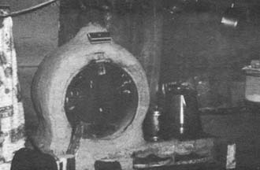
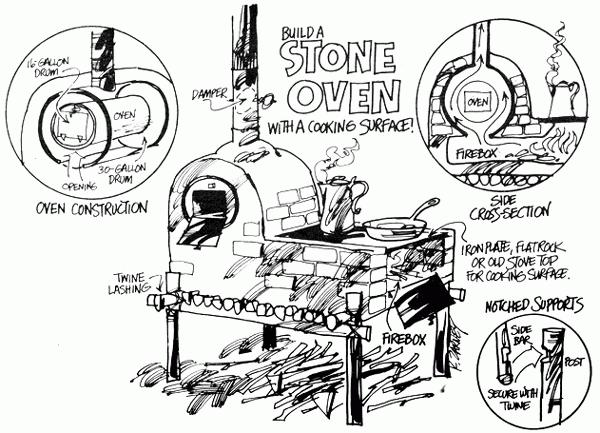

There are those who argue-sometimes with good reason-that the whole concept of running off to distant lands to "convert the heathen" has created far more suffering than joy in the world. Maybe so, maybe not. But no matter what you, personally, may think about the message carried by missionaries . . . it might pay you to take a closer look at some of the low-cost living and survival methods pioneered and employed by various members of the breed.
If you wanted someone to teach you homesteading skills, would you think of asking a missionary? Probably not . . . yet if he'd ever served in a remote part of the world, such an evangelist might be a very good instructor. After all, long before the back-to-the-land movement got started, many dedicated men and women of various faiths were already old hands at setting up housekeeping with scanty supplies, local resources and their own ingenuity.
Though some ministers abroad now enjoy modern facilities and equipment, the "do it yourself" tradition is still-necessarily-very much alive at New Tribes Mission . . . a nondenominational, evangelical Protestant foundation. The 900 NTM field workers specialize in carrying the Gospel to the most primitive peoples in the wilds of New Guinea, South America, Africa and the Philippines. Their work, in fact, is so demanding that New Tribes' five "boot camps" (in Pennsylvania, Florida, Canada and Wisconsin) teach the apprentice missionary basic skills, not only of ministry, but of survival.
An essential part of this training-"jungle camp"-takes place every spring when each NTM student goes out into the woods near the school and begins to build the house in which he and his family will live for a period of one to two months.
During the several weeks it usually takes to clear a site and erect a shelter, the missionary trainee tries as much as possible to simulate jungle conditions and to do as he will have to do when he finds himself actually living with a native tribe far from "civilization". Since it's very difficult to send building supplies to the interior areas where the new evangelist will be working, he knows that he'll probably have to make do with what's available. This means, for one thing, that if the missionary and his family want to cook and bake on something more advanced than an open fire, they must learn during the training period to build what they can with what they have: earth and stone and what grows.
Here, then, is the type of stove that New Tribes trainees have found most practical . . . a design that's well suited to homesteading in the boondocks because it can be built quite readily from materials at hand wherever you are.
The first step in the construction of the primitive "kitchen range" is the fabrication of a platform to raise the cooking area to a convenient working height. Usually this is done by driving short poles into the ground and tying crosspieces to the uprights with a generous amount of baling twine. The result is a sort of table-like affair which is topped with stout branches to serve as a base for the stove.
Next, construct a three-sided stone or brick box-open at one end-to hold the fire. To do this, place a covering of stone on the raised platform and cement the rocks together with clay or mortar (keeping the surface as smooth as possible so that the stove will be easier to clean). Then build up the sides of the firebox as you'd construct a wall, and seal all the chinks. Finally, cover the top of this box, for about two-thirds of its length nearest the fuel entrance, with a flat plate (preferably of cast iron, but you can use steel or even stone). Remember, however, that only hard, unlayered rock will do and the slab must be dried out by slow heating to prevent it from bursting or even exploding when exposed to intense heat.
At the other end of the firebox-farthest from its open end-you should next construct your stove's oven around a five-gallon can. The container is supported at front and back and room is left between its sides and the stone or brickwork so that the smoke and hot gases can pass on their way up to the chimney.
Though the can is satisfactory, a better way to build the oven is to place a whole 16-gallon drum inside a 30-gallon drum cut in half lengthwise. The larger barrel serves as a form for the brick or stone and makes for a neater and easier job.
The oven itself, of course, has to have one end fitted with a door . . . a job that's most easily handled with an oxyacetylene torch, though it can be done with hand tools. Cut a square hole in the metal, make a cover that's about an inch bigger all the way around and attach the closure to the baking compartment . . . with hinges at the bottom so the door can swing down out of the way. Finally, make or buy a latch for the top of the door.
The chimney-which consists of a pipe set into a hole in the arch above the oven-must fit tightly and be cemented in with clay or mortar. You'll also need to put a damper in the pipe so that the draft (and hence the amount of heat) can be controlled.
Of course, what I've described is just one possible form of simple oven. The Indians of the Southwest, and other peoples around the world, achieve the same results by building a structure like a beehive of stone, with an opening in the front near the bottom and a smoke hole at the top. This chamber is heated through and through for a couple of hours, the ashes are raked out and the device is then ready to bake with the stored-up heat in its stone. This form of oven is a little more awkward to use, but it does work well. Although the Indian version is usually built on the ground and therefore requires a lot of bending over, I see no reason why it couldn't also be raised on a platform to eliminate the stooping.
There you are . . . pick your style and go to it. And good luck!
±±±±± ±±±±±± ±±±±±
|
 |
 |
|